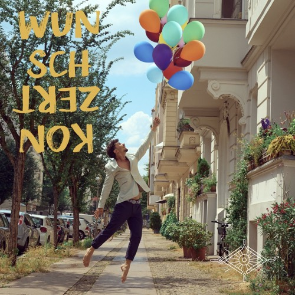
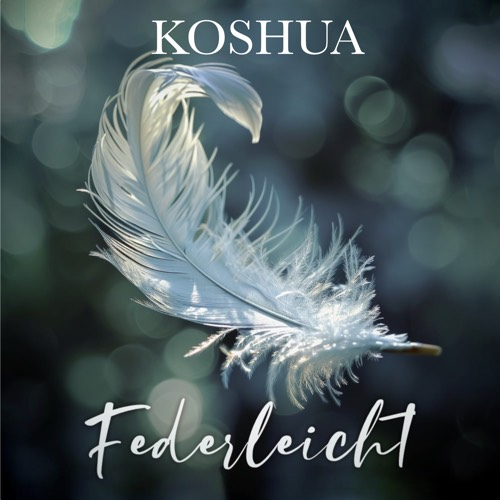

Faszien sind die Brücke zwischen Körper und Seele. Ich begleite dich in deine Mitte.
Faszien sind die Brücke zwischen Körper und Seele. Ich begleite dich in deine Mitte.
Mein Weg
Ich bin Yilmaz Koshua. Aufgewachsen in Hannover mit türkischen Wurzeln, später in Berlin gelebt, mittlerweile auf eigenen Wegen.
2018 erlebte ich durch bewusstes Atmen eine tiefgreifende Wiedergeburt — sieben Tage und Nächte voller Bewusstheit, in denen sich mein gesamtes System neu synchronisiert hat. Diese Erfahrung hat alles verändert. Aus „Yili" wurde Yilmaz Koshua, und mein Weg führte mich von der Medien- und Studio-Arbeit zur Körperarbeit, zur Meditation, zum Klang.
Schon mit zehn Jahren habe ich begonnen zu massieren — meine Schwester nach der Arbeit, fast jeden Abend. Diese frühe Erfahrung des Gebens prägt meinen Weg bis heute. Über Yoga, Qi Gong und Pranayama habe ich meine eigene Art der Körperarbeit gefunden, die heute in der Faszien-Arbeit ihren Anker hat.
Meine Arbeit ist nicht-therapeutisch im juristischen Sinne. Was ich anbiete, ist Begleitung — durch Berührung, Atem, Klang und einen Raum, in dem du ankommen darfst.
Portrait
4:5 · contemplativ
Atmosphäre-Bild
Hände · Licht · Stille
Architektur meiner Arbeit
Mein Weg führt durch drei Felder, die für mich eines sind: Körper, Geist und Seele. Faszien sind die Brücke. Der Geist lebt dazwischen, im Kopf.
Wenn alle drei in Einheit schwingen, können wir unser Potenzial in größter Schaffenskraft entfalten und wachsen.
Faszien-Arbeit, manuelle Sessions, gezielte Bewegungs- und Mobility-Übungen. Ich arbeite mit dem Gewebe, das deinen Körper trägt — und mit dem, was sich darin festgehalten hat.
Pranayama, Meditation und Konzentrationsübungen. Über den Atem findet der Geist Heimat — nicht über mehr Denken, sondern über bewusstes Spüren.
Klang, Affirmation, Musik mit Texten, die für mich wirken, weil sie aus meinem Herzen kommen. Wenn Körper und Geist still werden, hörst du, was die Seele schon immer wusste.
Mit mir arbeiten
Eine individuelle Begleitung durch deinen Körper. Wir arbeiten mit gezielten Faszien-Manövern, Atem und Klang an dem, was sich gerade zeigt — eine Spannung, ein Bereich, ein Muster. Kein Standard-Programm, sondern was du brauchst.
Session anfragenEine geführte Stunde durch sanfte Faszien-Maneuver, Atemarbeit und einen kurzen Klang-Anker. Du gehst danach mit klarerem Körper, ruhigerem Geist und ein bisschen mehr Mitte in den Sonntag.
AnmeldenLängere Formate, in denen wir tiefer eintauchen. Termine kommen — sag Bescheid, wenn du auf der Liste sein möchtest.
Auf die ListeKlang
Ich schreibe seit über zwanzig Jahren Lieder. New Age, Spiritual Pop, Singer-Songwriter — auf Deutsch und Englisch, mit Stimme, Gitarre und Kanun. Affirmationen, die für mich wirken, weil sie aus meinem Herzen kommen.

Single · 2026
Stern

Album · 2019
Wunschkonzert

Single · 2024
Federleicht
weitere
Singles
Singles
Hoffnung · Ciao Kakao · Rose & Gold
Podcast
Männer & Gefühle
Podcast · 2025
Männer & Gefühle
Kontakt
Schreib mir, wenn du eine Session anfragen möchtest, eine Frage hast, oder einfach Hallo sagen willst.